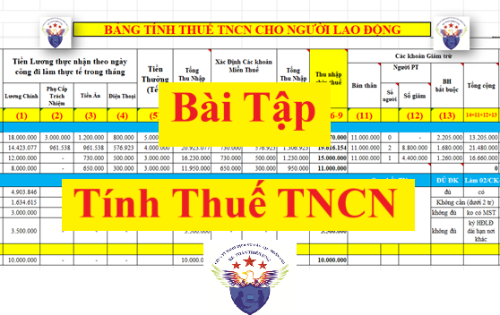

Bài tập tính thuế Thu nhập cá nhân mới nhất năm 2026. Kế toán Diệu Tâm xin hướng dẫn giải các Bài tập thuế thu nhập cá nhân mới nhất theo đúng Luật thuế TNCN năm 2026.
Trước tiên, Kế Toán Diệu Tâm xin được chia sẻ một vài thông tin mà các bạn cần biết trước khi tiến hành giải các bài tập về thuế thu nhập cá nhân:
Để tính được thuế TNCN cho người lao động thì các bạn cần phải phân biệt được người lao động có thu nhập đó là cá nhân cư trú hay là cá nhân không cư trú. Vì 2 đối tượng này sẽ có cách tính thuế TNCN khác nhau:
+ Đối với cá nhân không cư trú: thì tính theo biểu toàn phần 20%
Thuế TNCN phải nộp = 20% x thu nhập chịu thuế
+ Đối với cá nhân cư trú: thì các bạn phải xác định xem người lao động đó ký loại hợp đồng nào với doanh nghiệp và nếu là hợp đồng lao động thì thời hạn của hợp đồng đó là bao lâu. Vì mỗi loại hợp đồng, hay thời hạn của HĐLĐ sẽ ảnh hưởng tới cách tính thuế TNCN của cá nhân đó:
+ TH1: Nếu NLĐ đó ký hợp đồng lao động dưới 3 tháng hoặc ký các loại hợp đồng như thử việc, khoán việc, dịch vụ... thì sẽ tính thuế TNCN theo tỷ lệ 10%
Thuế TNCN phải nộp = 10% x Tổng thu nhập
+ TH2: Nếu NLĐ đó ký hợp đồng lao động từ 3 tháng trở lên (bao gồm cả HĐLĐ vô thời hạn)... thì sẽ tính thuế TNCN theo biểu lũy tiến từng phần
Thuế TNCN phải nộp = Thu nhập tính thuế X Thuế suất theo biểu lũy tiến từng phần
Sau đây, Kế Toán Diệu Tâm sẽ đưa ra các bài tập tính thuế TNCN theo từng đối tượng nêu trên:
Bài tập 1: Tính thuế thu nhập cá nhân cho người lao động là cá nhân cư trú có ký hợp đồng lao động có thời hạn từ 3 tháng trở lên (HĐLĐ từ 3 tháng đến HĐLĐ vô thời hạn)Công ty Kế Toán Diệu Tâm ký hợp đồng lao động có thời hạn 36 tháng với anh Nguyễn Đình Trí
Trên hợp đồng thỏa thuận như sau:
+ Lương chính 25.000.000/tháng
+ Phụ cấp ăn trưa: 900.000/tháng
+ Phụ cấp điện thoại: 500.000/tháng
+ Phụ cấp xăng xe: 300.000/tháng
Trong đó: Mức lương và phụ cấp nêu trên được tính trên 26 ngày đi làm thực tế trong tháng (Công thức tính lương tháng = (Lương chính + các khoản phụ cấp) X ngày công đi làm thực tế trong tháng / 26 ngày)
Anh Trí tham gia bảo hiểm trên mức lương 25 triệu => Hàng tháng anh Trí bị trích bảo hiểm trừ vào lương là: 25 triệu X 10,5% = 2.625.000đ+ Phụ cấp ăn trưa: 900.000/tháng
+ Phụ cấp điện thoại: 500.000/tháng
+ Phụ cấp xăng xe: 300.000/tháng
Trong đó: Mức lương và phụ cấp nêu trên được tính trên 26 ngày đi làm thực tế trong tháng (Công thức tính lương tháng = (Lương chính + các khoản phụ cấp) X ngày công đi làm thực tế trong tháng / 26 ngày)
Anh Trí đã đăng ký 1 người phụ thuộc là con nhỏ tại Công ty Kế Toán Diệu Tâm để tính giảm trừ gia cảnh
Tại tháng 3/2026, anh Trí đi làm 25, nghỉ việc riêng không lương 1 ngày
Yêu cầu:
Hãy tính thuế TNCN tháng 3/2026 cho anh Trí
Thông tin bổ sung:
Thông tin bổ sung:
+ Anh Trí là cá nhân cư trú tại Việt Nam (anh là người Việt Nam, sinh sống và làm việc tại Việt Nam, không định cư tại nước ngoài)
+ Tháng 3/2026, anh Trí chỉ có thu nhập tại Công ty Kế Toán Diệu Tâm
Hướng dẫn giải bài tập số 1:+ Tháng 3/2026, anh Trí chỉ có thu nhập tại Công ty Kế Toán Diệu Tâm
Bước 1: Xác định cách tính thuế TNCN cho anh Trí:
Vì:
+ Anh Trí là cá nhân cư trú
+ và anh Trí đang ký loại hợp đồng là Hợp đồng lao động có thời hạn 36 tháng tức là loại hợp đồng lao động có thời hạn từ 3 tháng trở lên
+ và anh Trí đang ký loại hợp đồng là Hợp đồng lao động có thời hạn 36 tháng tức là loại hợp đồng lao động có thời hạn từ 3 tháng trở lên
Nên anh Trí sẽ được tính thuế TNCN theo biểu lũy tiến từng phần
Bước 2: Tính thu nhập theo ngày công đi làm thực tế trong tháng 3/2026 cho anh Trí
Vì Thuế TNCN sẽ tính theo thu nhập theo ngày công đi làm thực tế chứ không tính theo tiền lương trên hợp đồng lao động
Do đó, trước khi tính thuế TNCN thì các bạn cần xác định được thu nhập theo ngày công đi làm thực tế trong tháng 3/2026 cho anh Trí là bao nhiêu
Với ngày công đi làm thực tế trong tháng 3/2026 là 25 ngày và Công thức tính lương tháng là = (Lương chính + các khoản phụ cấp) X ngày công đi làm thực tế trong tháng / 26 ngày đã thỏa thuận trên hợp đồng thì chúng ta xác định được như sau:
| Khoản thu nhập | Công thức tính |
Thu nhập theo ngày công đi làm thực tế |
| Lương chính | = 25.000.000 x 25 / 26 | 24.038.462 |
| Phụ cấp ăn trưa | = 900.000 x 25 / 26 | 865.385 |
| Phụ cấp điện thoại | = 500.000 x 25 / 26 | 480.769 |
| Phụ cấp xăng xe | = 300.000 x 25 / 26 | 288.462 |
| Đây là thu nhập dùng để tính thuế TNCN |
Bước 3: Thực hiện tính thuế TNCN theo biểu lũy tiến từng phần cho anh Trí:
Công thức tính thuế TNCN theo biểu lũy tiến từng phần như sau:
Thuế TNCN phải nộp = Thu nhập tính thuế X Thuế suất Theo biểu lũy tiến từng phần
Thu nhập tính thuế = Thu nhập chịu thuế - Các khoản giảm trừ
Thu nhập chịu thuế = Tổng thu nhập - Các khoản thu nhập được miễn thuế
Để biết các xác định chi tiết từng khoản trong các công thức nêu trên thì các bạn xem tại đây: Cách tính thuế TNCN theo biểu lũy tiến từng phần
Sau đây, chúng ta sẽ đi xác định từng khoản cho anh Trí:
1. Tổng thu nhập: là toàn bộ các khoản thu nhập mà anh Trí được nhận trong tháng, bao gồm cả các khoản tiền thưởng lễ tết (trả vào tháng nào thì cộng vào tháng đó để tính thuế TNCN của tháng đó)
Tổng thu nhập tháng 3/2026 của anh Trí = 24.038.462 + 865.385 + 480.769 + 288.462 = 25.673.077đ
2. Các khoản thu nhập được miễn thuế TNCN: Xác định tại các khoản phụ cấp:
Để biết chi tiết quy định về các khoản thu nhập được miễn thuế TNCN thì các bạn xem chi tiết tại đây:
Trong 3 khoản phụ cấp mà anh Trí được nhận trong tháng 3/2026 thì:
| Khoản thu nhập | Quy định | Số thu nhập được miễn thuế |
| Phụ cấp ăn trưa |
Được miễn tất Từ ngày 15/06/2025 trở đi: không còn bị mức khống chế miễn tối đa 730.000/người/tháng nữa Xem thêm: Quy định phụ cấp tiền ăn giữa ca |
865.385 |
| Phụ cấp điện thoại | Được miễn tất | 480.769 |
| Phụ cấp xăng xe | Không được miễn | 0 |
| Tổng cộng |
1.346.154đ
|
3. Xác định thu nhập chịu thuế
Thu nhập chịu thuế = Tổng thu nhập - Các khoản thu nhập được miễn thuế = 25.673.077 - 1.346.154đ = 24.326.923đ
4. Xác định các khoản giảm trừ: đây là các khoản được trừ vào thu nhập chịu thuế của cá nhân trước khi xác định thu nhập tính thuế từ tiền lương, tiền công
Gồm có: giảm trừ bản thân, người phụ thuộc, bảo hiểm bắt buộc...
Chi tiết về cách xác định mức giảm cho từng khoản giảm trừ này thì các bạn xem tại đây: Các khoản được giảm trừ khi tính thuế TNCN
| Tổng các khoản được giảm trừ | = | Giảm trừ bản thân | + | Giảm trừ người phụ thuộc | + | Tiền đóng bảo hiểm bắt buộc |
| = |
15.500.000 |
+ |
Anh trí có 1 người phụ thuộc nên được giảm là: 6.200.000 |
+ |
2.625.000 |
|
| = | 24.325.000đ | |||||
5. Xác định thu nhập tính thuế
Thu nhập tính thuế = Thu nhập chịu thuế - Các khoản giảm trừ = 24.326.923 - 24.325.000 = 1.923đ
6. Xác định công thức tính thuế TNCN theo bảng lũy tiến từng phần
| Thuế TNCN phải nộp | = | Thu nhập tính thuế | X |
Thuế suất theo biểu lũy tiến từng phần |
Trong đó, Thuế suất theo Biểu thuế luỹ tiến từng phần được quy định tại: Điều 9 của Luật Thuế thu nhập cá nhân số 109/2025/QH15 áp dụng từ kỳ tính thuế năm 2026 như sau:
| Bậc thuế |
Phần thu nhập tính thuế/năm (triệu đồng) |
Phần thu nhập tính thuế/tháng (triệu đồng) |
Thuế suất (%) |
| 1 | Đến 120 | Đến 10 | 5 |
| 2 | Trên 120 đến 360 | Trên 10 đến 30 | 10 |
| 3 | Trên 360 đến 720 | Trên 30 đến 60 | 20 |
| 4 | Trên 720 đến 1.200 | Trên 60 đến 100 | 30 |
| 5 | Trên 1.200 | Trên 100 | 35 |
Với mức thu nhập tính thuế của tháng 3/2026 là: 1.923đ
=> Thuộc bậc 1 => áp dụng mức thuế suất là 5%
7. Xác định số thuế thuế thu nhập cá nhân phải nộp
=> Số thuế thu nhập cá nhân phải nộp của anh Trí trong tháng 3 năm 2026 là:
1.923đ x 5% = 96đ
Kế Toán Diệu Tâm mời các bạn xem chi tiết hơn về cách tính thuế TNCN tại đây:
Bài tập 2: Tính thuế thu nhập cá nhân cho người lao động là cá nhân cư trú có ký hợp đồng lao động có thời hạn dưới 3 tháng hoặc ký loại hợp đồng không phải là hợp đồng lao động
Đề bài:
Công ty Kế Toán Diệu Tâm ký hợp đồng thử việc 30 ngày với chị Trần Thị Mẫn
Bắt đầu từ ngày 19/02/2026 đến hết ngày 20/3/2026
Trên hợp đồng thử việc thỏa thuận: Lương: 6.000.000/tháng/26 ngày
Thời hạn trả lương: vào cuối mỗi tháng
Thời hạn trả lương: vào cuối mỗi tháng
Yêu cầu:
Hãy tính thuế TNCN tháng 2/2026 và tháng 3/2026 cho chị Mẫn
Biết rằng:
+ Tháng 2/2026: Chị Mẫn có ngày công đi làm thực tế là: 8 ngày
+ Tháng 3/2026: Chị Mẫn có ngày công đi làm thực tế là: 17 ngày
+ Trong năm 2026, trước khi vào làm việc tại công ty Kế Toán Diệu Tâm thì chị Mẫn chưa đi làm ở đâu cả
+ Chị Mẫn đã có mã số thuế TNCN
+ Ước tính thu nhập trong năm tính thuế 2026 của chị Mẫn không quá 186 triệu
Lời giải:
Bước 1: Xác định cách tính thuế TNCN cho chị Mẫn:
Bước 1: Xác định cách tính thuế TNCN cho chị Mẫn:
Vì chị Mẫn ký loại hợp đồng là hợp đồng thử việc => Mà hợp đồng thử việc không phải là hợp đồng lao động => Nên chị Mẫn sẽ bị tính thuế TNCN theo tỷ lệ 10%
Quy định về việc tính thuế TNCN theo tỷ lệ 10% như sau:
Theo quy định tại điểm i, khoản 1, điều 25 của TT 111/2013/TT-BTC thì:
Các tổ chức, cá nhân trả tiền công, tiền thù lao, tiền chi khác cho cá nhân cư trú không ký hợp đồng lao động (theo hướng dẫn tại điểm c, d, khoản 2, Điều 2 Thông tư này) hoặc ký hợp đồng lao động dưới ba (03) tháng có tổng mức trả thu nhập từ hai triệu (2.000.000) đồng/lần trở lên thì phải khấu trừ thuế theo mức 10% trên thu nhập trước khi trả cho cá nhân.
Trường hợp cá nhân chỉ có duy nhất thu nhập thuộc đối tượng phải khấu trừ thuế theo tỷ lệ nêu trên nhưng ước tính tổng mức thu nhập chịu thuế của cá nhân sau khi trừ gia cảnh chưa đến mức phải nộp thuế thì cá nhân có thu nhập làm cam kết (theo mẫu ban hành kèm theo văn bản hướng dẫn về quản lý thuế) gửi tổ chức trả thu nhập để tổ chức trả thu nhập làm căn cứ tạm thời chưa khấu trừ thuế thu nhập cá nhân.
Căn cứ vào cam kết của người nhận thu nhập, tổ chức trả thu nhập không khấu trừ thuế. Kết thúc năm tính thuế, tổ chức trả thu nhập vẫn phải tổng hợp danh sách và thu nhập của những cá nhân chưa đến mức khấu trừ thuế (vào mẫu ban hành kèm theo văn bản hướng dẫn về quản lý thuế) và nộp cho cơ quan thuế. Cá nhân làm cam kết phải chịu trách nhiệm về bản cam kết của mình, trường hợp phát hiện có sự gian lận sẽ bị xử lý theo quy định của Luật quản lý thuế.
Cá nhân làm cam kết theo hướng dẫn tại điểm này phải đăng ký thuế và có mã số thuế tại thời điểm cam kết.
Cụ thể về cách tính thuế TNCN theo tỷ lệ 10% như sau:
+ Nếu trả từ 2 triệu đồng/lần trở lên thì phải thực hiện khấu trừ thuế TNCN theo mức 10% trên thu nhập trước khi trả thu nhập cho người lao động.
Cụ thể về cách tính thuế TNCN theo tỷ lệ 10% như sau:
+ Nếu trả từ 2 triệu đồng/lần trở lên thì phải thực hiện khấu trừ thuế TNCN theo mức 10% trên thu nhập trước khi trả thu nhập cho người lao động.
+ Nếu trả dưới 2 triệu đồng/lần hoặc trả từ 2 triệu đồng/lần trở lên nhưng người lao động có làm cam kết thu nhập thì không phải thực hiện khấu trừ thuế TNCN.
Chi tiết và đầy đủ về cách tính thuế TNCN theo tỷ lệ 10% này thì các bạn xem tại đây: Cách tính thuế TNCN hợp đồng giao khoán, dịch vụ
Chi tiết và đầy đủ về cách tính thuế TNCN theo tỷ lệ 10% này thì các bạn xem tại đây: Cách tính thuế TNCN hợp đồng giao khoán, dịch vụ
Bước 2: Tính thuế TNCN cho chị Mẫn
* Tại tháng 2/2026:
Do tại tháng 2/2026: Chị Mẫn có ngày công đi làm thực tế là: 8 ngày
Nên Tiền lương theo ngày công đi làm thực tế trong tháng 2/2026 của chị Mẫn là: 6.000.000 X 8 / 26 = 1.846.153đ
* Tại tháng 2/2026:
Do tại tháng 2/2026: Chị Mẫn có ngày công đi làm thực tế là: 8 ngày
Nên Tiền lương theo ngày công đi làm thực tế trong tháng 2/2026 của chị Mẫn là: 6.000.000 X 8 / 26 = 1.846.153đ
=> Với mức thu nhập của tháng 2/2026 là 1.846.153đ => Đang nhỏ hơn 2.000.000đ => Tại tháng 2 năm 2026, chị Mẫn sẽ không bị công ty Kế Toán Diệu Tâm khấu trừ thuế TNCN
* Tại tháng 3/2026:
Do tại tháng 3/2026: Chị Mẫn có ngày công đi làm thực tế là: 17 ngày
Nên Tiền lương theo ngày công đi làm thực tế trong tháng 3/2026 của chị Mẫn là: 6.000.000 X 17 / 26 = 3.923.076đ
Do tại tháng 3/2026: Chị Mẫn có ngày công đi làm thực tế là: 17 ngày
Nên Tiền lương theo ngày công đi làm thực tế trong tháng 3/2026 của chị Mẫn là: 6.000.000 X 17 / 26 = 3.923.076đ
=> Với mức thu nhập của tháng 3/2026 là 3.923.076đ => Đang lớn hơn 2.000.000đ => Tại tháng 2 năm 2026, chị Mẫn sẽ bị công ty Kế Toán Diệu Tâm khấu trừ thuế TNCN 10% nếu không làm cam kết thu nhập:
+ Trường hợp 1: nếu chị Mẫn đủ điều kiện để làm cam kết thu nhập theo mẫu 08/CK-TNCN theo thông tư 80/2021/TT-BTC và có làm cam kết gửi cho công ty Kế Toán Diệu Tâm thì:
+ Trường hợp 1: nếu chị Mẫn đủ điều kiện để làm cam kết thu nhập theo mẫu 08/CK-TNCN theo thông tư 80/2021/TT-BTC và có làm cam kết gửi cho công ty Kế Toán Diệu Tâm thì:
=> Công ty Kế Toán Diệu Tâm sẽ không khấu trừ thuế TNCN của chị Mẫn => Chị Mẫn sẽ được trả đủ số tiền lương của tháng 3/2026 là 3.923.076đ
Chi tiết về điều kiện và cách làm cam kết thu nhập theo mẫu 08/CK-TNCN thì các bạn xem tại đây nhé:
Điều kiện làm cam kết thu nhập 08 CK TNCN không bị khấu trừ thuế
Cách làm kết thu nhập 08/CK-TNCN không bị khấu trừ thuế TNCN
Chi tiết về điều kiện và cách làm cam kết thu nhập theo mẫu 08/CK-TNCN thì các bạn xem tại đây nhé:
Điều kiện làm cam kết thu nhập 08 CK TNCN không bị khấu trừ thuế
Cách làm kết thu nhập 08/CK-TNCN không bị khấu trừ thuế TNCN
+ Trường hợp 2: nếu chị Mẫn không đủ điều kiện để làm cam kết thu nhập theo mẫu 08/CK-TNCN theo thông tư 80/2021/TT-BTC hoặc đủ điều kiện nhưng không làm cam kết gửi cho công ty Kế Toán Diệu Tâm thì:
=> Công ty Kế Toán Diệu Tâm sẽ khấu trừ thuế TNCN của chị Mẫn theo tỷ lệ 10% trên tổng thu nhập
=> Số tiền thuế TNCN bị khấu trừ của Chị Mẫn là: 3.923.076 X 10% = 392.307đ
=> Số tiền lương công ty Kế Toán Diệu Tâm còn phải trả cho chị Mẫn tại tháng 3/2026 là: 3.923.076 - 392.307 = 3.530.769đ
=> Số tiền thuế TNCN bị khấu trừ của Chị Mẫn là: 3.923.076 X 10% = 392.307đ
=> Số tiền lương công ty Kế Toán Diệu Tâm còn phải trả cho chị Mẫn tại tháng 3/2026 là: 3.923.076 - 392.307 = 3.530.769đ
(Số tiền thuế TNCN đã khấu trừ của chị Mẫn là 392.307đ thì công ty Kế Toán Diệu Tâm sẽ kê khai và nộp về ngân sách nhà nước theo quy định)
Bài tập 3: Tính thuế thu nhập cá nhân cho người lao động là cá nhân không cư trú
Đề bài:
Công Ty Diệu Tâm ký hợp đồng với ông Kim Sang-Sik (là chuyên gia người Hàn Quốc, là cá nhân không cư trú tại Việt Nam)
Tháng 1/2026: ông Kim Sang-Sik có mức thu nhập chịu thuế là: 50.000.000
Yêu cầu:
Đề bài:
Công Ty Diệu Tâm ký hợp đồng với ông Kim Sang-Sik (là chuyên gia người Hàn Quốc, là cá nhân không cư trú tại Việt Nam)
Tháng 1/2026: ông Kim Sang-Sik có mức thu nhập chịu thuế là: 50.000.000
Yêu cầu:
Hãy tính thuế TNCN cho ông Kim Sang-Sik tại tháng 1/2026:
Lời giải:
Bước 1: Xác định cách tính thuế TNCN cho ông Kim Sang-Sik
Theo quy định tại: Điều 21 của Luật Thuế thu nhập cá nhân số 109/2025/QH15 áp dụng từ kỳ tính thuế năm 2026
Điều 21. Thuế thu nhập cá nhân đối với thu nhập từ tiền lương, tiền công
Thuế thu nhập cá nhân đối với thu nhập từ tiền lương, tiền công của cá nhân không cư trú được xác định bằng tổng số tiền lương, tiền công mà cá nhân không cư trú nhận được do thực hiện công việc tại Việt Nam nhân (x) với thuế suất 20%, không phân biệt nơi trả thu nhập.
Công thức tính thuế TNCN như sau:
Thuế TNCN phải nộp = Tổng số tiền lương, tiền công mà cá nhân không cư trú nhận được X 20%
Bước 2: Tính thuế TNCN cho ông Kim Sang-Sik
Thuế TNCN phải khấu trừ của ông Kim Sang-Sik tại tháng 1/2026 = Tổng số tiền lương, tiền công mà cá nhân không cư trú nhận được X 20% = 50.000.000 X 20% = 10.000.000đ
=> Số tiền lương công ty Kế Toán Diệu Tâm còn phải trả cho ông Kim Sang-Sik tại tháng 1/2026 là: 350.000.000 - 10.000.000 = 40.000.000đ
(Số tiền thuế TNCN đã khấu trừ của ông Kim Sang-Sik là 10.000.000đ thì công ty Kế Toán Diệu Tâm sẽ kê khai và nộp về ngân sách nhà nước theo quy định)
- Năm 2025, theo hợp đồng lao động ký giữa Ông Hải và Công ty tư vấn Minh Phúc thì Ông Hải được trả lương hàng tháng là 31,5 triệu đồng,
- Ngoài tiền lương Ông Hải được công ty trả thay phí hội viên câu lạc bộ thể thao 1 triệu đồng/tháng. Ông Hải phải đóng bảo hiểm bắt buộc là 1,5 triệu đồng/tháng. Công ty chịu trách nhiệm nộp thuế thu nhập cá nhân theo quy định thay cho ông Ông
Hải.
- Trong năm Ông Hải chỉ tính giảm trừ gia cảnh cho bản thân, không có người phụ thuộc và không phát sinh đóng góp từ thiện, nhân đạo, khuyến học.
Yêu cầu: Tính thuế thu nhập cá nhân phải nộp cho Ông Hải:
Hướng dẫn giải:
Cách tính thuế thu nhập cá nhân phải nộp của Ông Hải:
Chú ý: Vì công ty trả theo lương NET (Tức là DN sẽ chịu thuế TNCN thay cho người lao động). Nên thu nhập tính thuế sẽ phải quy đổi theo quy định lại Phụ lục 02 theo Thông tư 111.
Phụ lục: 02/PL-TNCN
(Ban hành kèm theo Thông tư 111/2013/TT-BTC của Bộ Tài chính)
BẢNG QUY ĐỔI
THU NHẬP KHÔNG BAO GỒM THUẾ RA THU NHẬP TÍNH THUẾ
(đối với thu nhập từ tiền lương, tiền công)
(Ban hành kèm theo Thông tư 111/2013/TT-BTC của Bộ Tài chính)
BẢNG QUY ĐỔI
THU NHẬP KHÔNG BAO GỒM THUẾ RA THU NHẬP TÍNH THUẾ
(đối với thu nhập từ tiền lương, tiền công)
| Stt |
Thu nhập làm căn cứ quy đổi/tháng (viết tắt là TNQĐ) |
Thu nhập tính thuế |
| 1 | Đến 4,75 triệu đồng (trđ) | TNQĐ/0,95 |
| 2 | Trên 4,75 trđ đến 9,25trđ | (TNQĐ – 0,25 trđ)/0,9 |
| 3 | Trên 9,25 trđ đến 16,05trđ | (TNQĐ – 0,75 trđ )/0,85 |
| 4 | Trên 16,05 trđ đến 27,25 trđ | (TNQĐ – 1,65 trđ)/0,8 |
| 5 | Trên 27,25 trđ đến 42,25 trđ | (TNQĐ – 3,25 trđ)/0,75 |
| 6 | Trên 42,25 trđ đến 61,85 trđ | (TNQĐ – 5,85 trđ)/0,7 |
| 7 | Trên 61,85 trđ | (TNQĐ – 9,85 trđ)/0,65 |
Cách tính thuế TNCN phải nộp của Ông Hải cụ thể như sau:
- Thu nhập làm căn cứ quy đổi là:
31,5 triệu đồng + 1 triệu đồng – (9 triệu đồng + 1,5 triệu đồng) = 22 triệu đồng
- Thu nhập tính thuế
(xác định theo Phụ lục số 02/PL-TNCN theo Thông tư 111/2013/TT-BTC) là:
= Bậc 4: (TNQĐ – 1,65 trđ)/0,8
= (22 triệu đồng – 1,65 triệu đồng)/0,8 = 25,4375 triệu đồng
- Thuế thu nhập cá nhân Ông Hải phải nộp
(áp dụng cách tính thuế rút gọn "Cách 2" theo Phụ lục số 01/PL-TNCN) là:
= Bậc 4: = 20% TNTT - 1,65 trđ
= 25,4375 triệu đồng × 20% - 1,65 triệu đồng = 3,4375 triệu đồng
Chi tiết xem thêm: Cách tính thuế TNCN theo lương NET
Bài tập 5:
- Giả sử Ông Hải ở bài tập trên còn được công ty trả thay tiền thuê nhà là 6 triệu đồng/tháng.
Yêu cầu: Tính thuế thu nhập cá nhân phải nộp của Ông Hải:
Hướng dẫn giải:
Cách tính thuế thu nhập cá nhân phải nộp hàng tháng của Ông Hải:
Bước 1: Xác định tiền thuê nhà trả thay được tính vào thu nhập làm căn cứ quy đổi
- Thu nhập làm căn cứ quy đổi (không gồm tiền thuê nhà):
= 31,5 triệu đồng + 1 triệu đồng – (9 triệu đồng + 1,5 triệu đồng) = 22 triệu đồng
- Thu nhập tính thuế (xác định theo Phụ lục số 02/PL-TNCN) là:
= (22 triệu đồng – 1,65 triệu đồng)/0,8 = 25,4375 triệu đồng
- Thu nhập chịu thuế (không gồm tiền thuê nhà):
= 25,4375 triệu đồng + 9 triệu đồng + 1,5 triệu đồng = 35,9375 triệu đồng/tháng
Chu ý: Theo quy định: "Khoản tiền thuê nhà, điện nước và các dịch vụ kèm theo (nếu có) đối với nhà ở do đơn vị sử dụng lao động trả thay tính vào thu nhập chịu thuế theo số thực tế trả thay nhưng không vượt quá 15% tổng thu nhập chịu thuế phát sinh (chưa bao gồm tiền thuê nhà, điện nước và dịch vụ kèm theo (nếu có)) tại đơn vị không phân biệt nơi trả thu nhập.”
Như vậy: 15% Tổng thu nhập chịu thuế (không gồm tiền thuê nhà):
= 35,9375 triệu đồng × 15% = 5,390 triệu đồng/tháng
Vậy tiền thuê nhà được tính vào thu nhập làm căn cứ quy đổi là 5,390 triệu đồng/thángBước 2: Xác định thu nhập tính thuế:
- Thu nhập làm căn cứ để quy đổi thành thu nhập tính thuế:
= 31,5 triệu đồng + 1 triệu đồng + 5,390 triệu đồng – (9 triệu đồng + 1,5 triệu đồng)
= 27,39 triệu đồng/tháng
= 27,39 triệu đồng/tháng
- Thu nhập tính thuế (quy đổi theo Phụ lục số 02/PL-TNCN):
= (27,39 triệu đồng - 3,25 triệu đồng)/0,75 = 32,187 triệu đồng/tháng
- Thuế thu nhập cá nhân phải nộp:
= 32,187 triệu đồng × 25% - 3,25 triệu đồng = 4,797 triệu đồng/tháng
- Thu nhập chịu thuế hàng tháng của ông Hải là:
= 31,5 triệu đồng + 1 triệu đồng + 5,390 triệu đồng + 4,797 triệu đồng
= 42,687 triệu đồng/tháng
= 42,687 triệu đồng/tháng
Hoặc xác định theo cách:
= 32,187 triệu đồng + 9 triệu đồng + 1,5 triệu đồng
= 42,687 triệu đồng/tháng.
= 42,687 triệu đồng/tháng.
Kế toán Diệu Tâm xin Chúc các bạn thành công!
Các bạn muốn học làm kế toán thuế thực tế: Thực hành kê khai thuế - Quyết toán thuế thực tế chuyên sâu có thể tham gia: Lớp học kế toán thuế
__________________________________________________
